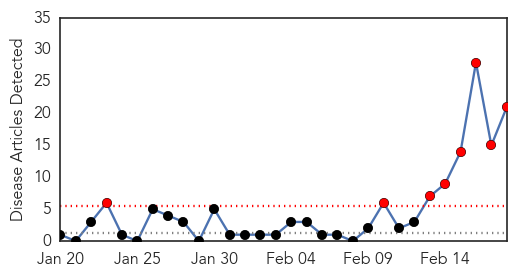
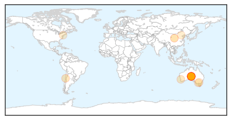
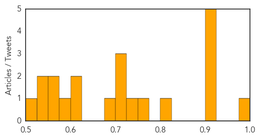
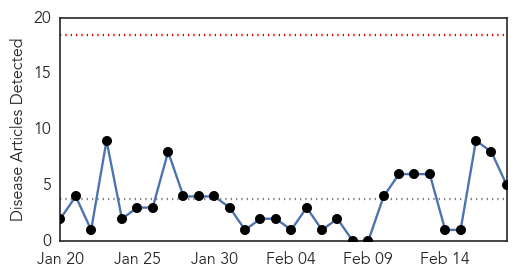

Hepatitis
30-Day Web Trend
8 alerts, 0 warnings

30-Day Twitter Trend
0 alerts, 0 warnings

Article Locations
Article Confidences
Top Articles:
- 0.982
- Scary berries: how food gets contaminated and what to do
- 0.925
- Australians Get Hepatitis A From Chinese Berries
- 0.918
- Ban on golgappa proposed in Berhampur due to jaundice
- 0.904
- Health experts expect more cases of berry-related Hepatitis A in WA
- 0.904
- Health experts expect more cases of berry-related Hepatitis A in WA
- 0.904
- Health experts expect more cases of berry-related Hepatitis A in WA
- 0.824
- GPs and schools on hep A alert
- 0.772
- Photos show why we should all think twice before buying 'fresh' food from China
- 0.732
- Blood donations quarantined in wake of hepatitis A berry recall
- 0.722
- Hepatitis A berry contamination
- 0.722
- Hepatitis A berry contamination
- 0.701
- More hepatitis A cases from frozen berries inevitable: WA Health Department
- 0.694
- Blood donations quarantined in wake of hepatitis A berry recall
- 0.620
- Raspberries linked to Hepatitis A outbreak
- 0.617
- School kids in Melbourne, Geelong, may have eaten frozen berries
- 0.576
- Study: Door-to-door campaign linked hepatitis C patients to care
- 0.565
- Berry-related hepatitis spreads
- 0.561
- Blood donors asked to contact Red Cross over hepatitis A fears
- 0.547
- National hepatitis A response planned, but changes to food labelling rejected
- 0.530
- Frozen berries hepatitis A outbreak sees focus narrow on raspberries as prime cause
- 0.523
- Australian Authorities Eying Stricter Screenings After Hepatitis Frozen Berry Incidents
Top Tweets:
-
No tweets found for Feb 18, 2015
Cholera
30-Day Web Trend
0 alerts, 0 warnings

30-Day Twitter Trend
4 alerts, 0 warnings

Article Locations

Article Confidences

Top Articles:
- 0.991
- Comment: Heed council's cholera warnings
- 0.988
- Kenya : For cholera, prevention always better than cure
- 0.946
- Haiti cholera victims file new lawsuit against UN -The Tico Times
- 0.943
- Researchers scour Italian cemetery for DNA of ancient strains of cholera
- 0.775
- GHS alerts possible cholera outbreak in Brong-Ahafo
Top Tweets:
-
No tweets found for Feb 18, 2015